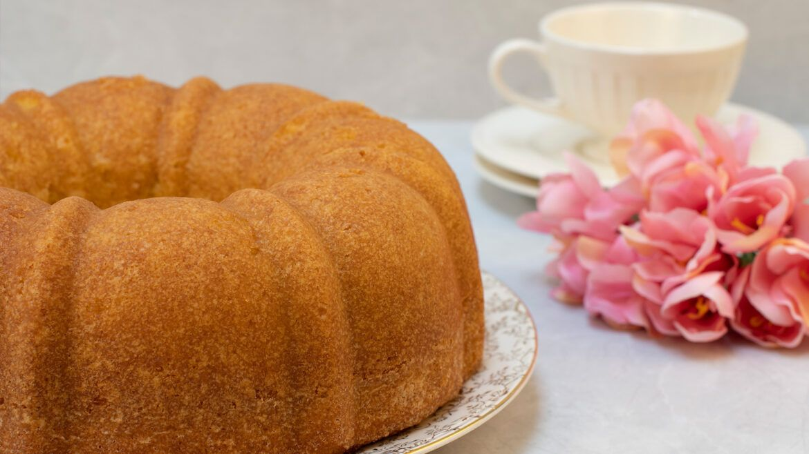
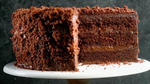

Queque Seco Ines
Ingredientes
- 2 barras de mantequilla (taste o una lactocrema y una numar clásica)
- 2 taza de azúcar
- 2 cucharadas de ron
- 2 taza de harina
- 6 huevos
- 2 cucharaditas de royal – pizca de sal
- ¼ taza de jugo de naranja
- 1 cucharadita de ralladura de naranja
Preparación
Batir las claras a nieve suave y reservar
Cremar la mantequilla con el azúcar yemas y ron.
Cernir los ingredientes secos
Agregar los secos alternando con el jugo, agregar de ultimo las claras.
Verter molde de chimenea de 25 cm engrasado y enharinado.
Hornear a 350ªF por unos 40 min.

Queque Milky Way
Ingredientes
- ¾ taza de mantequilla de maní
- 2 barra de mantequilla
- 4 huevos
- ½ taza de leche
- 2 taza de harina
- 2 ½ cucharadita de royal – pizca de sal
- 1 barra de Milky Way grande (o 6 pequeños) picados
- 2 cucharadita de vainilla
Preparación
Cremar las mantequillas con el azúcar, agregar los huevos uno a uno.
Cernir los ingredientes secos, agregarlos alternando con la leche, y la vainilla.
Agregar los trocitos de chocolates de ultimo y verter en molde de chimenea de 24 cm engrasado y enharinado. Hornear por 45 min a 350º F.
Dejar enfriar y rociar azúcar en polvo.
